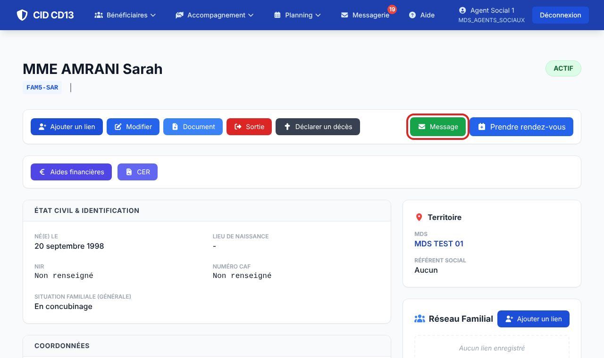
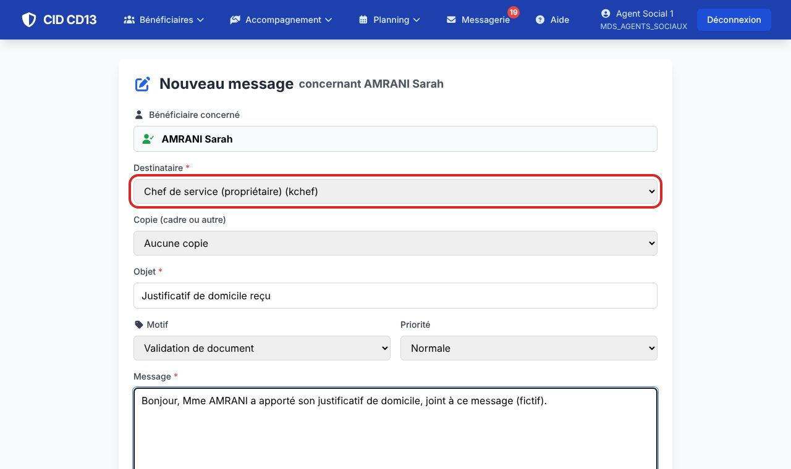
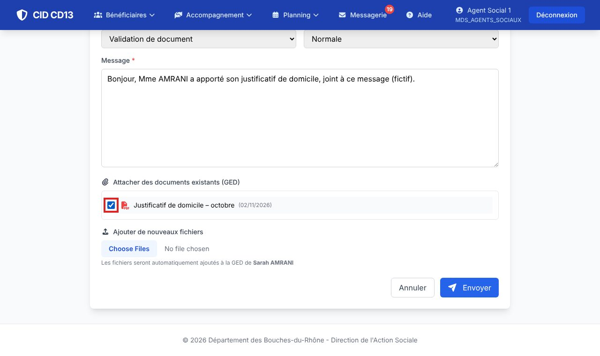
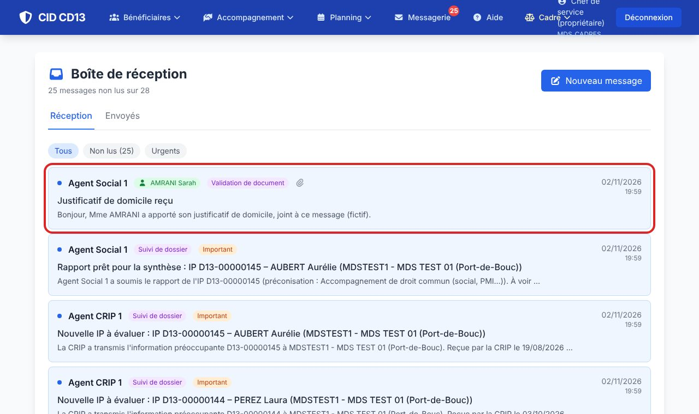
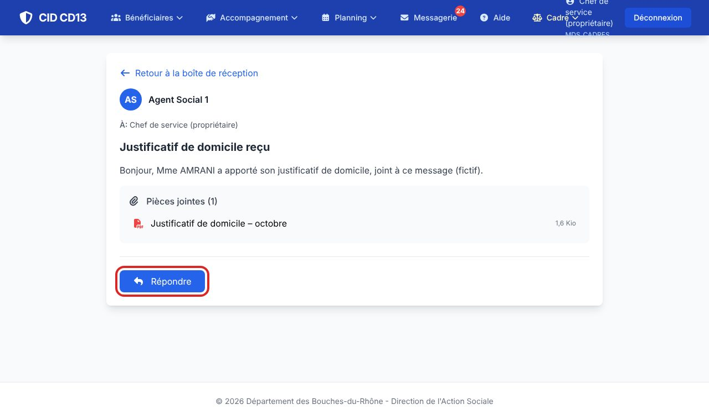
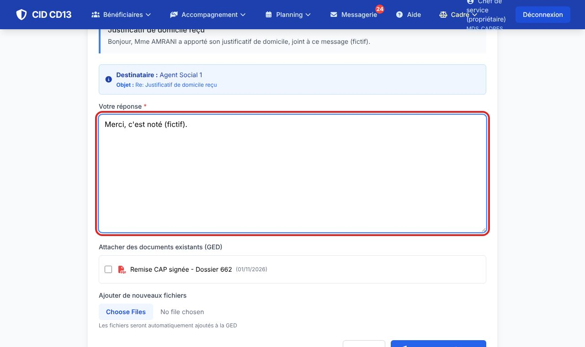
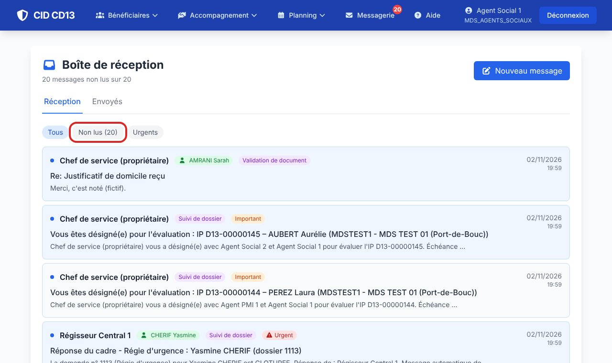

1Écrire depuis la fiche usager


- Sur la fiche de l'usager, cliquez sur Message : le message est rattaché à cet usager.
- Choisissez le destinataire (et éventuellement une copie), l'objet, le motif et la priorité, puis écrivez le message.
- Depuis le menu Messagerie → Nouveau message, vous pouvez aussi écrire sans usager, ou rechercher l'usager concerné.
2Joindre des documents

- Cochez les documents de la GED de l'usager à joindre.
- Ajouter de nouveaux fichiers : ils sont classés automatiquement dans la GED de l'usager, dans la catégorie choisie.
- Cliquez sur Envoyer.
3Lire et répondre



- Le nombre de messages non lus s'affiche sur le menu Messagerie.
- Ouvrez le message : les pièces jointes se téléchargent d'un clic ; un lien mène au dossier concerné (aide, IP…).
- Répondre : écrivez la réponse (documents possibles), puis envoyez.
4Trier ses messages

- Filtres Tous, Non lus, Urgents ; l'onglet Envoyés garde vos messages.
Bon à savoir
- Les circuits de CID (aides, IP…) envoient aussi des messages automatiques : décision à prendre, dossier transmis, rappel de délai.
Et ensuite ?
Cliquez sur une image pour l'agrandir. Le cadre rouge montre où cliquer ou quoi remplir. Toutes les données affichées sont fictives.